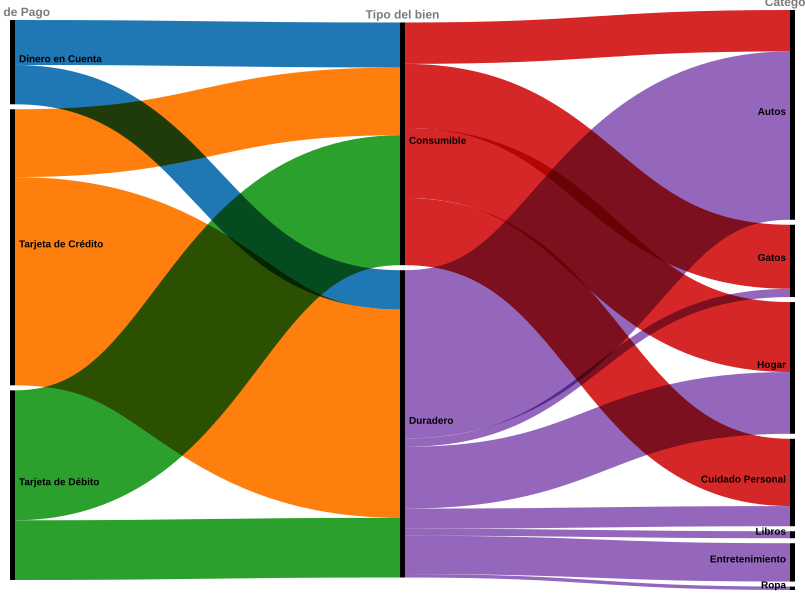

1. Flujo de Transacciones y Medios de Pago
Diagrama Alluvial generado en RAWGraphs que mapea el canal de origen de los fondos (Dinero en Cuenta y Tarjeta de Crédito) en relación directa con las categorías de consumo detectadas (Consumibles, Autos y Gatos).

💡 Hallazgo principal: La estructura de pagos evidencia una clara segmentación comportamental: mientras la tarjeta de crédito se orienta de forma prioritaria al financiamiento de bienes duraderos, el dinero en cuenta y la tarjeta de débito se utilizan principalmente para bienes consumibles.
2. Anatomía de la Billetera: Volumen vs. Valor
Treemap jerárquico desarrollado en Tableau. El tamaño de cada bloque representa la cantidad de transacciones (frecuencia), mientras que la escala cromática semáforo expone el monto total gastado por categoría.

🔍 Lectura analítica: Permite contrastar la frecuencia operativa de las compras frente al peso monetario real que consume cada categoría en la billetera, observando que las categorías con mayor cantidad de compras no son necesariamente las que mayor gasto de dinero tuvieron.
3. El Pulso del Consumo
Gráfico de líneas editorial de Datawrapper que expone la tendencia mensual de gastos, destacando mediante anotaciones analíticas el impacto de compras extraordinarias.
📈 Conclusión temporal: La estacionalidad se quiebra netamente en mayo debido a la adquisición de equipamiento tecnológico multimedia.
4. Estrategia de Financiación
Diagrama de dispersión interactivo en Flourish que cruza el monto total de la operación frente a las cuotas pactadas, utilizando escalas lineales optimizadas.
💳 Patrón crediticio y hallazgo financiero: Se evidencia que las compras de mayor monto se deciden financiar económicamente mediante cuotas, mientras que las transacciones de menor valor se opta por afrontarlas de forma directa utilizando dinero en cuenta y tarjeta de débito.